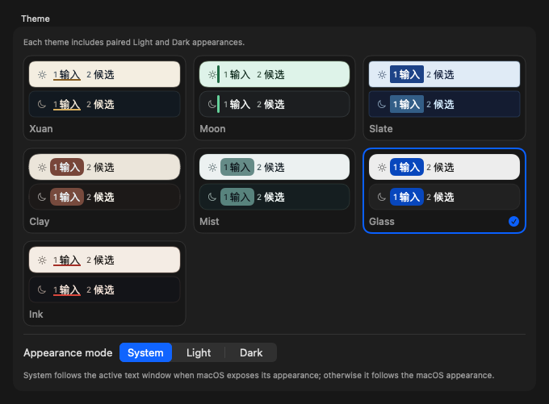

中文
全拼或双拼，也支持连续中英混输。双拼时菜单栏显示「双」。
适用于 Apple Silicon Mac，需 macOS 13 或更高版本。
从项目发布页下载 Linnet.pkg，在 Finder 中右键选择「打开」，按安装器提示完成安装。
保存手头的工作后注销，让 macOS 完成首次输入法登记。日后在设置中更新核心无需重复这一步。
打开「系统设置 → 键盘 → 文本输入 → 编辑」，添加或启用 Linnet，按系统提示允许。
在菜单栏输入菜单中选中 Linnet，输入拼音，确认中文候选正常显示。
社区版没有 Apple Developer ID 签名或公证。若系统拦截安装，确认文件来自本项目后，在「系统设置 → 隐私与安全性」中按提示允许打开。
在终端中进入安装包所在目录，运行以下命令，与同一版本发布页上的 SHA-256 核对。校验值不符或提示文件损坏时，请停止安装并核对来源。
shasum -a 256 Linnet.pkgLinnet 安装到 ~/Library/Input Methods/Linnet.app，无需管理员权限。安装后不要手动移动 App。
中文、英文辅助和直接输入，共用一个输入法。
全拼或双拼，也支持连续中英混输。双拼时菜单栏显示「双」。
英文补全、纠错、音标、中文释义和下一词预测。
直接输入字符。适合代码、命令等不需要候选转换的内容。
从菜单栏输入菜单打开 Settings。设置界面支持简体中文与英文。
Settings › 输入
在中文方案中选择全拼或双拼，再点击「应用更改」。也可在本页选择简体或繁体输出。
保持中文模式，中文按当前拼音方案输入，英文输入完整单词。一句中可以多次穿插英文，无需中途切换模式。
kwregiondemigrationsize、mode 等字母组合可能同时对应拼音和英文，需从候选中选择。候选排序受上下文和学习记录影响。
关闭学习会保留已有记录，重新开启后可继续使用。
Linnet 的中文方案接入了 Rime 生态的辅助输入工具：cC 加表达式用于计算，uU 加全拼用于部件拆字查询。字母大小写需与示例前缀一致。
Settings › 输入 › Smart English
轻按 Shift 切换到 En，输入英文即可获得补全和拼写建议。原始输入始终保留为候选；音标、中文释义、预测和英文学习可在设置中选择。

在中文模式下，输入 | 加当前方案的拼音编码。以「算法」为例：
|suanfa|srfa在输入设置中可将查词前缀改为 ;；默认分号不触发查词。Smart English 模式下可直接输入当前方案的拼音编码，无需前缀，普通英文候选优先。
Settings › 词典
在「文本展开 / Text Expander」中添加以 x; 开头的短码，并填写要展开的文本。保存后，输入短码即可展开。
x;addr在「禁用英文词」中添加完整单词，可隐藏该词，匹配不区分大小写。右键「忘记此候选的学习记录」只删除学习记录，不会隐藏词库中内置的单词。
Settings › 外观
选择主题后可直接预览。每套主题都有浅色和深色外观，也可跟随系统。中文与英文的候选排列可分别设置。

Settings › 数据与更新
可选择将中英文学习记录同步到其他 Mac。开启后自动检查，也可手动立即同步；另一台 Mac 的接收时间取决于 iCloud Drive 的传输进度。
同步中英文学习记录。自定义词、禁用词、短语扩展和设置不会随学习记录自动同步。
在同一页面管理备份、恢复和导入导出。只有主动选择导入，才会读取其他 Rime 或 Hallelujah 数据；导入前会创建本地备份。
个人词典、学习记录和本地备份保存在 ~/Library/Application Support/Linnet/。启用学习同步或手动上传恢复备份后，相应数据会进入你的 iCloud Drive；学习同步和恢复备份的内容范围不同。导出的文件也可能包含个人数据。
Settings › 数据与更新
日常使用核心（Core）更新，复用已安装的词库和模型，无需注销。
在「核心更新」中点击「下载核心更新」，等待下载和校验完成。
先确认或取消正在输入的文字，再从菜单栏切换到其他输入法。其他应用可以保持打开。
点击「应用更新… / Apply Update…」。此按钮与保存设置的「应用更改」不同。
输入几个字，确认可用，并检查「正在运行」与「已安装」版本一致。
在「数据与更新」选择正式版或预览版，下载对应语言数据。新数据准备好前继续使用当前数据；更新会复用未变化的词包。
同版本词包冲突可使用「修复语言数据更新」。App 损坏时，从项目发布页获取完整 Linnet.pkg 进行修复，无需先卸载。健康词包和个人数据会保留。
{kind=link}